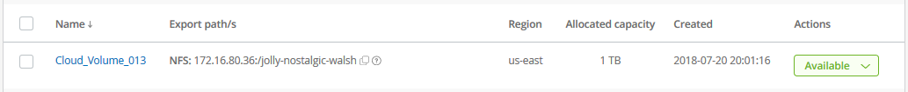

Dokumentationsänderungen beantragen
Dokumentationsänderungen beantragen In GitHub bearbeiten
In GitHub bearbeiten Leitfaden für Beitragende
Leitfaden für BeitragendeErstellen eines Cloud Volume
Beitragende
Sie erstellen Cloud Volumes über die NetApp Cloud Orchestrator Website.
Voraussetzungen
Ihre AWS-Umgebung muss bestimmte Anforderungen erfüllen, bevor Sie Ihr erstes Cloud-Volume erstellen können. Für jede AWS Region, in der Cloud-Volumes implementiert werden sollen, sind folgende Eigenschaften erforderlich:
-
Virtuelle Private Cloud (VPC)
-
Virtual Private Gateway (VGW), das mit Ihrem VPC verbunden ist
-
Subnetz für die VPC
-
Definierte Routen, die das Netzwerk einschließen, auf dem Cloud Volumes ausgeführt werden
-
Optional ein Direct Connect Gateway
Zum Erstellen Ihres ersten Cloud-Volumes in einer Region müssen Sie über die folgenden Informationen verfügen:
-
AWS Konto-ID: Eine 12-stellige Amazon-Account-ID ohne Striche.
-
Classless Inter-Domain Routing (CIDR) Block: Ein nicht verwendeter IPv4-CIDR-Block. Das Netzwerkpräfix muss zwischen /16 und /28 liegen und muss auch innerhalb der Bereiche liegen, die für private Netzwerke reserviert sind (RFC 1918). Wählen Sie kein Netzwerk aus, das Ihre VPC-CIDR-Zuweisungen überschneidet.
-
Sie müssen die richtige Region ausgewählt haben, in der Sie den Service verwenden möchten. Siehe "Wählen Sie die Region aus".
Falls Sie die erforderlichen AWS Netzwerkkomponenten nicht konfiguriert haben, finden Sie im "NetApp Cloud Volumes Service für AWS – Kontoeinrichtung" Leitfaden für weitere Informationen.
Hinweis: Wenn Sie planen, ein SMB-Volume zu erstellen, müssen Sie einen Windows Active Directory-Server zur Verfügung haben, mit dem Sie eine Verbindung herstellen können. Sie geben diese Informationen bei der Erstellung des Volumes ein. Stellen Sie außerdem sicher, dass der Admin-Benutzer in der Lage ist, ein Maschinenkonto im angegebenen Organisationseinheit-Pfad (OU) zu erstellen.
Geben Sie die Volume-Details ein
Füllen Sie die Felder oben auf der Seite „Volume erstellen“ aus, um den Namen, die Größe, das Service Level und mehr des Volumes zu definieren.
-
Nachdem Sie sich beim angemeldet haben "NetApp Cloud Orchestrator" Site mit der E-Mail-Adresse, die Sie während Ihres Abonnements angegeben haben, und Sie haben "Die Region ausgewählt"Klicken Sie auf die Schaltfläche Neues Volume erstellen.

-
Wählen Sie auf der Seite Create Volume NFS, SMB oder Dual-Protocol als Protokoll für das Volumen, das Sie erstellen möchten.
-
Geben Sie im Feld Name den Namen an, den Sie für das Volume verwenden möchten.
-
Wählen Sie im Feld Region die Region AWS aus, in der Sie das Volume erstellen möchten. Diese Region muss mit der Region übereinstimmen, die Sie für AWS konfiguriert haben.
-
Wählen Sie im Feld Zeitzone Ihre Zeitzone aus.
-
Geben Sie im Feld Volume PATH den Pfad an, den Sie verwenden möchten, oder übernehmen Sie den automatisch generierten Pfad.
-
Wählen Sie im Feld Service Level das Leistungsniveau für die Lautstärke aus: Standard, Premium oder Extreme.
Siehe "Auswählen des Service-Levels" Entsprechende Details.
-
Wählen Sie im Feld zugewiesene Kapazität die erforderliche Kapazität aus. Beachten Sie, dass die Anzahl der verfügbaren Inodes von der zugewiesenen Kapazität abhängt.
Siehe "Auswählen der zugewiesenen Kapazität" Entsprechende Details.
-
Wählen Sie im Feld NFS Version die Option NFSv3, NFSv4.1 oder beides aus, je nach Ihren Anforderungen.
-
Wenn Sie das Dual-Protokoll ausgewählt haben, können Sie den Sicherheitsstil im Feld Sicherheitsstil auswählen, indem Sie im Dropdown-Menü NTFS oder UNIX wählen.
Sicherheitsstile beeinflussen den verwendeten Berechtigungstyp und die Art der Änderung der Berechtigungen.
-
UNIX verwendet Bits im NFSv3 Modus, und nur NFS-Clients können Berechtigungen ändern.
-
NTFS verwendet NTFS ACLs. Nur SMB-Clients können Berechtigungen ändern.
-
-
Behalten Sie im Feld Snapshot-Verzeichnis den Standardwert bei, in dem Sie das Snapshot-Verzeichnis für dieses Volume anzeigen können, oder deaktivieren Sie das Kästchen, um die Liste der Snapshot-Kopien auszublenden.
Netzwerkdetails eingeben (einmalige Einstellung pro AWS Region)
Wenn Sie zum ersten Mal in dieser AWS-Region ein Cloud-Volume erstellt haben, wird der Abschnitt Network angezeigt, damit Sie Ihr Cloud Volumes-Konto mit Ihrem AWS-Konto verbinden können:
-
Geben Sie im Feld * CIDR (IPv4)* den gewünschten IPv4-Bereich für die Region ein. Das Netzwerkpräfix muss zwischen /16 und /28 liegen. Das Netzwerk muss auch innerhalb der Bereiche liegen, die für private Netzwerke reserviert sind (RFC 1918). Wählen Sie kein Netzwerk aus, das Ihre VPC-CIDR-Zuweisungen überschneidet.
-
Geben Sie im Feld AWS Account ID Ihre 12-stellige Amazon-Account-ID ohne Bindestriche ein.

Regeln für die Exportrichtlinie eingeben (optional)
Wenn Sie NFS oder Dual-Protocol ausgewählt haben, können Sie im Abschnitt Richtlinie exportieren eine Exportrichtlinie erstellen, um die Clients zu identifizieren, die auf das Volume zugreifen können:
-
Geben Sie im Feld zulässige Clients die zulässigen Clients unter Verwendung einer IP-Adresse oder eines Classless Inter-Domain Routing (CIDR) an.
-
Wählen Sie im Feld Zugriff die Option Lesen & Schreiben oder Schreibgeschützt aus.
-
Wählen Sie im Feld Protocols das Protokoll (oder Protokolle, wenn das Volume NFSv3 und NFSv4.1 Zugriff erlaubt) aus, das für den Benutzerzugriff verwendet wird.

Klicken Sie auf + Regel für Exportrichtlinie hinzufügen, wenn Sie zusätzliche Regeln für die Exportrichtlinie definieren möchten.
Datenverschlüsselung aktivieren (optional)
-
Wenn Sie SMB oder Dual-Protocol ausgewählt haben, können Sie die SMB-Sitzungsverschlüsselung aktivieren, indem Sie das Kontrollkästchen für das Feld SMB3 Protocol Encryption aktivieren aktivieren aktivieren aktivieren aktivieren aktivieren aktivieren aktivieren aktivieren aktivieren aktivieren.
Hinweis: Aktivieren Sie die Verschlüsselung nicht, wenn SMB 2.1 Clients das Volume mounten müssen.
Integrieren des Volumes in einen Active Directory Server (SMB und Dual Protocol)
Wenn Sie SMB oder Dual-Protocol ausgewählt haben, können Sie wählen, ob das Volume mit einem Windows Active Directory-Server oder einem von AWS verwalteten Microsoft AD im Abschnitt Active Directory integriert werden soll.
Wählen Sie im Feld Verfügbare Einstellungen einen vorhandenen Active Directory-Server aus oder fügen Sie einen neuen AD-Server hinzu.
So konfigurieren Sie eine Verbindung zu einem neuen AD-Server:
-
Geben Sie im Feld DNS-Server die IP-Adresse(n) des/der DNS-Server ein. Verwenden Sie ein Komma, um die IP-Adressen zu trennen, wenn Sie auf mehrere Server verweisen, z. B. 172.31.25.223, 172.31.2.74.
-
Geben Sie im Feld Domäne die Domäne für die SMB-Freigabe ein.
Verwenden Sie bei Verwendung von AWS Managed Microsoft AD den Wert aus dem Feld „Directory DNS Name“.
-
Geben Sie im Feld SMB Server NetBIOS einen NetBIOS-Namen für den zu erstellenden SMB-Server ein.
-
Geben Sie im Feld Organisationseinheit „CN=Computer“ für Verbindungen zu Ihrem eigenen Windows Active Directory-Server ein.
Bei Verwendung von AWS Managed Microsoft AD muss die Organisationseinheit im Format „OU=<NetBIOS_Name>“ eingegeben werden. Beispiel: OU=AWSmanagedAD.
Um eine geschachtelte Organisationseinheit zu verwenden, müssen Sie zuerst die OU der niedrigsten Ebene bis zur OU der höchsten Ebene aufrufen. BEISPIEL: OU=THIRDLEVEL,OU=SECONDLEVEL,OU=FIRLEVEL.
-
Geben Sie im Feld Benutzername einen Benutzernamen für Ihren Active Directory-Server ein.
Sie können jeden Benutzernamen verwenden, der zum Erstellen von Computerkonten in der Active Directory-Domäne autorisiert ist, zu der Sie sich dem SMB-Server anschließen.
-
Geben Sie im Feld Passwort das Passwort für den von Ihnen angegebenen AD-Benutzernamen ein.

Siehe "Entwerfen einer Standorttopologie für Active Directory Domain Services" Richtlinien zum Design einer optimalen Microsoft AD-Implementierung
Siehe "Einrichtung des AWS Directory Service mit NetApp Cloud Volumes Service für AWS" Ausführliche Anweisungen zur Verwendung von AWS Managed Microsoft AD finden Sie in diesem Leitfaden.

Sie sollten die Anleitung zu den AWS-Sicherheitseinstellungen befolgen, um die korrekte Integration von Cloud Volumes in Windows Active Directory-Server zu ermöglichen. Siehe "Einstellungen der AWS Sicherheitsgruppen für Windows AD Server" Finden Sie weitere Informationen. Hinweis: UNIX-Benutzer, die das Volume mit NFS mounten, werden als Windows-Benutzer "root" für UNIX-Root und "pcuser" für alle anderen Benutzer authentifiziert. Stellen Sie sicher, dass diese Benutzerkonten in Active Directory vorhanden sind, bevor Sie ein Dual-Protokoll-Volume bei der Verwendung von NFS mounten.
Erstellen einer Snapshot-Richtlinie (optional)
Wenn Sie eine Snapshot-Policy für dieses Volume erstellen möchten, geben Sie die Details im Abschnitt Snapshot-Richtlinie ein:
-
Wählen Sie die Snapshot-Frequenz aus: Stündlich, täglich, wöchentlich oder monatlich.
-
Wählen Sie die Anzahl der zu behenden Snapshots aus.
-
Wählen Sie den Zeitpunkt, zu dem der Snapshot erstellt werden soll.

Sie können weitere Snapshot-Richtlinien erstellen, indem Sie die oben beschriebenen Schritte wiederholen oder die Registerkarte Snapshots im linken Navigationsbereich auswählen.
Erstellen Sie das Volume
-
Scrollen Sie nach unten auf der Seite und klicken Sie auf Lautstärke erstellen.
Wenn Sie zuvor ein Cloud-Volume in dieser Region erstellt haben, wird das neue Volume auf der Seite Volumes angezeigt.
Wenn dies das erste Cloud-Volume ist, das Sie in dieser AWS-Region erstellt haben und Sie die Netzwerkinformationen im Abschnitt Netzwerk dieser Seite eingegeben haben, wird ein Fortschrittsdialog angezeigt, in dem die nächsten Schritte angezeigt werden, die Sie befolgen müssen, um das Volume mit AWS-Schnittstellen zu verbinden.

-
Akzeptieren Sie die virtuellen Schnittstellen, wie in Abschnitt 6.4 des beschrieben "NetApp Cloud Volumes Service für AWS – Kontoeinrichtung" Begleiten. Sie müssen diese Aufgabe innerhalb von 10 Minuten ausführen, oder das System kann sich abstellen.
Wenn die Schnittstellen nicht innerhalb von 10 Minuten angezeigt werden, kann es ein Konfigurationsproblem geben; in diesem Fall sollten Sie sich an den Support wenden.
Nachdem die Schnittstellen und andere Netzwerkkomponenten erstellt wurden, wird das erstellte Volume auf der Seite Volumes angezeigt, und das Feld Aktionen wird als verfügbar aufgeführt.

Weiter mit "Cloud-Volume mounten".